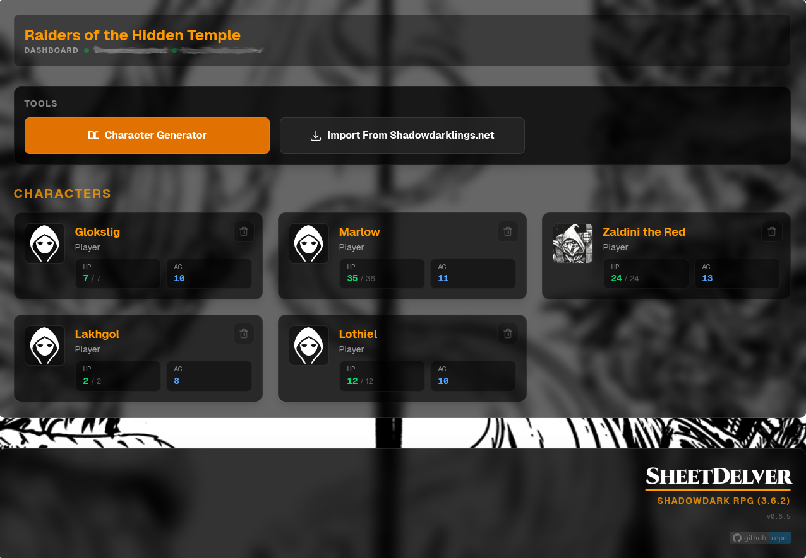

Character sheets
System designed views for your characters on phones, tablets, and desktops.
OPEN SOURCE / FOUNDRY VTT COMPANION
SheetDelver delivers character sheets outside of Foundry VTT for in-person play. Open them in a responsive browser view on a phone, tablet, or PC, with chat, shared journals, and dice nearby.
WORKS WITH FOUNDRY VTT 13 & 14

01 / THE IDEA
The GM keeps the world in Foundry while each player gets a dedicated sheet view. System modules decide how each sheet looks and behaves.
System designed views for your characters on phones, tablets, and desktops.
Images and journals shared by the GM, with a rich browser for the details.
Chat, dice, and combat context close to the sheet when the game picks up.
02 / SYSTEMS
System modules shape the sheet for each game, with their own rules and visual language.
03 / FAQ
A few answers about how SheetDelver fits into an in-person game.
It gives players at an in-person table a browser view of their Foundry VTT character sheets and shared table tools. The GM continues to run the world in Foundry.
Players open SheetDelver in a browser on their own device. The host sets up its connection to Foundry; players do not need to manage Foundry plugins or add-ons to use this view.
The interface is designed for phones, tablets, and PCs. Players need a browser and access to the SheetDelver server.
Chat, a dice roller with optional 3D animations, shared images and journals, and combat context are available in the player view.
04 / GETTING STARTED
For now, use the repository's setup wizard and manual instructions.
Node.js 22.12+ · Foundry VTT 13 or 14 · access to a Foundry world
Clone the project and install its dependencies.
git clone https://github.com/sheetdelver/sheetdelver.gitcd sheetdelver && npm installRun the setup wizard, then provide the Foundry service account values through environment variables or an owner-only .env file.
npm run setupLaunch the development server and open the player URL printed at startup.
npm run devOPEN SOURCE / OPEN WORLD
Explore the code, follow the modules, or help move SheetDelver forward.